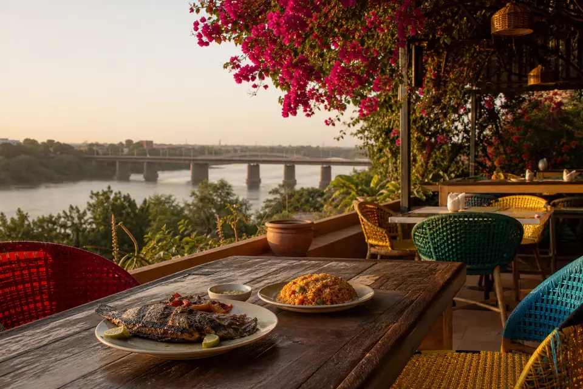

BamaHub · Bamako
Restaurants · Quartier du fleuve
Capitaine Bleu
Face au fleuve Niger, Capitaine Bleu célèbre le poisson frais : capitaine grillé, crevettes et brochettes de tilapia. Vue imprenable au coucher du soleil.
Aperçu partagé par BamaHub — annuaire local de Bamako. Les commerces et avis de cette démonstration sont fictifs.